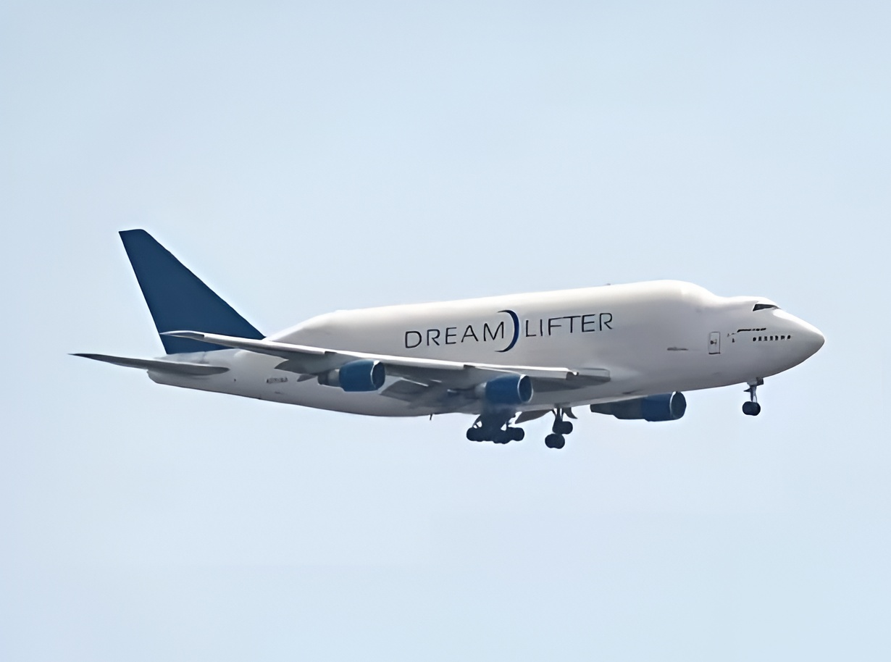

An Extremely Rare Visitor: Boeing's Dreamlifter Touches Down at JFK
.png)
One of the strangest-looking airplanes in the sky made a rare overnight stop at John F. Kennedy International Airport this week, when a Boeing 747-409(LCF) Dreamlifter operated by Atlas Air on behalf of the Boeing Company touched down on the evening of August 11th and departed the following morning, August 12th.
Registered N780BA and flying under the callsign GTI4231, the oversized-cargo freighter arrived at JFK at 1:14 PM EDT on August 11th, landing on Runway 31L on a routing from TAR (Tarbes–Lourdes–Pyrénées, France). The aircraft spent roughly eighteen hours on the ground before departing at 7:20 AM EDT on August 12th, also off Runway 31L, bound for CHS — Charleston, South Carolina, home to Boeing's 787 Dreamliner final assembly line. That routing lines up with the Dreamlifter's usual job: ferrying outsized fuselage and wing sections between Boeing's global supplier network and its U.S. assembly plants in Charleston and Everett, Washington.
Movements were logged as "Extremely Rare" on both legs — a fitting tag, since only four Dreamlifters exist worldwide, all operated on Boeing's behalf by Atlas Air, and JFK is far outside their normal East Coast rotation.
| Aircraft | Boeing 747-409(LCF) Dreamlifter |
| Registration | N780BA |
| Operator | Atlas Air, for the Boeing Company |
| Callsign | GTI4231 |
| Fleet size | Only 4 in existence worldwide |
| Arrival | Aug 11, 1:14 PM EDT · TAR → JFK · Runway 31L |
| Departure | Aug 12, 7:20 AM EDT · JFK → CHS · Runway 31L |
The Dreamlifter's bulbous, "Frankenstein 747" profile — created by dramatically enlarging the fuselage cross-section of a standard 747-400 airframe — makes it instantly recognizable to spotters, and sightings well outside its typical Everett–Wichita–Charleston–overseas supplier corridor tend to draw a crowd.
On Arrival

Photo: IzConMan
Departing for Charleston — August 12
.jpeg)
Photo: liaviation7